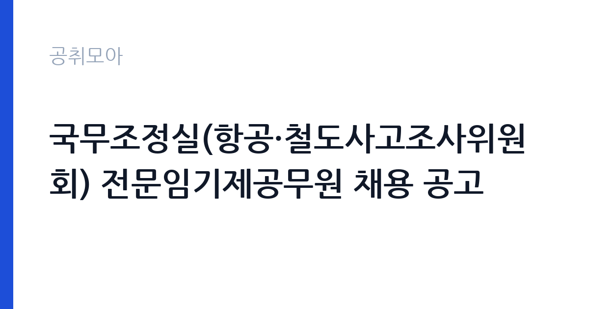

[국가기관] 국무조정실(항공·철도사고조사위원회) 전문임기제공무원 채용 공고
국무조정실 · 세종 · 마감 2026-11-16 (D-12) · 출처 나라일터

한눈에 보는 모집 조건
| 기관 | 국무조정실 |
|---|---|
| 공고명 | 국무조정실(항공·철도사고조사위원회) 전문임기제공무원 채용 공고 |
| 고용형태 | 임기제 |
| 근무지 | 세종 |
| 게시일 | 2026-11-04 |
| 마감일 | 2026-11-16 (D-12) |
지원자격, 이렇게 읽으세요
- 전문임기제 가급 1명 전문임기제 나급 4명
- 접수 ~2026-11-16 마감
- 세부 조건은 원문 공고문 확인
임기제공무원은 공무원 신분이지만 임용 기간이 정해져 있습니다. 전문성이 필요한 업무에 채용되며 임용 기간과 연봉등급이 공고문에 명시됩니다. 임기 중에는 공무원으로서의 복무 규정과 이해충돌 방지 의무가 적용됩니다. 이번 공고는 국무조정실에서 직접 진행하는 자체 전형으로, 응시자격과 제출서류는 공고문에 항목별로 제시됩니다. 분야마다 요구하는 경력이 완전히 다릅니다. 조종 분야는 회전익 조종 경력과 자격이, 정비 분야는 해당 계통의 정비사 자격과 실무 경력이 기준입니다. 사진·영상분석 분야는 영상 처리와 분석 경력이, 철도A 안전 분야는 철도 안전 업무 경력이 요건으로 붙습니다. 선발직급은 전문임기제 가급 1명과 나급 4명으로, 급이 다르면 경력 요건과 연봉등급도 달라집니다. 접수는 2026년 11월 4일부터 16일까지이고 문의는 국무조정실 인사과에서 받습니다. 서류는 접수 마감 이후 보완이 되지 않으므로 자격 요건과 증빙 서류를 마감 전에 모두 갖춰야 합니다. 공고문에 명시된 우대 사항은 해당 여부를 확인해 증빙을 첨부해야 가점이 반영됩니다. 동일 직무 경력자와 경쟁하게 되므로, 관련 경험이 있다면 증명서에 업무 내용이 구체적으로 적히도록 요청하십시오.
이 공고의 포인트
이 공고의 첫 번째 포인트는 고용 형태입니다. 임용 기간이 정해져 있지만 공무원 신분으로 복무 규정이 적용되고, 전문성이 인정되면 재임용이나 유사 직위 지원에 도움이 됩니다. 두 번째는 업무 범위가 명확하다는 점입니다. 항공·철도 사고조사(전문임기제) 직무로 채용되므로 배치 이후 담당 업무가 크게 흔들리지 않습니다. 세 번째는 근무지입니다. 세종 지역 근무로 수도권 공고에 비해 지원자 분포가 넓지 않아 상대적으로 경쟁이 분산되는 경우가 있습니다. 모집 인원이 적은 만큼 지원자 한 명 한 명의 서류 완성도가 당락에 크게 작용합니다. 다만 선발 인원이 1명으로 많지 않아 자격을 갖춘 지원자가 몰리면 경쟁률이 높아질 수 있습니다.
전형은 어떻게 진행되나
1차 서류, 2차 면접의 2단계로 진행되는 구성이 일반적입니다. 서류에서는 자격 요건과 경력 증빙을 확인하고, 면접에서는 실제 업무 수행 능력과 조직 적응을 봅니다. 직무에 따라 필기시험이나 실기, 컴퓨터 활용 시험이 추가되기도 하므로 공고문의 전형표를 먼저 확인하십시오. 단계별로 합격자만 다음 전형에 응시할 수 있고, 단계마다 응시 자격 확인 서류를 다시 제출해야 하는 경우가 있습니다. 최종합격자 발표 후에는 신원조회와 채용 신체검사가 남아 있습니다. 전형 일정이 공고문에 날짜로 명시되어 있으니 달력에 옮겨 두고 준비하십시오.
이런 분께 추천해요
- 항공 조종·정비 또는 철도 안전 분야 경력이 있는 분
- 사고 조사·분석 보고서 작성 경험이 있는 분
- 현장 투입과 보안 규정 준수가 가능한 분
지원 전 체크리스트
- 응시자격 요건과 경력 기준을 충족하는가 — 경력은 증명서로 입증해야 합니다
- 임용 기간과 연봉등급, 근무 시간 조건을 확인했는가
- 제출서류 목록을 모두 준비했는가 — 누락 시 서류 단계에서 탈락합니다
- 접수 마감 2026-11-16 이전에 접수 방식을 확인해 제출했는가
모집 일정과 제출 타이밍
2026-11-04에 공고가 올라왔고 접수는 2026-11-16까지입니다. 남은 기간은 12일이며, 이 기간에 자격증 사본과 경력증명서, 주민등록등본 같은 기본 서류를 모두 준비해야 합니다. 경력증명서는 발급에 며칠이 걸리는 경우가 있으니 가장 먼저 신청하십시오. 접수는 온라인과 우편·방문으로 나뉘는 경우가 많고, 우편 접수는 도착 기준으로 판정되므로 마감일 소인만 믿으면 안 됩니다. 면접 일정은 서류 발표 후 개별 통보되므로 제출 후에도 연락을 받을 수 있도록 유지해야 합니다. 임용 예정일이 빠르게 잡히는 공고이므로 현재 일정과 겹치지 않는지 미리 확인하십시오. 세종 근무지는 정부청사 인접 지역으로 관련 직무 공고가 꾸준히 나오는 편입니다. 마감까지 2주 안팎이 있어 준비할 시간은 있지만 미루면 촉박해집니다. 선발 인원이 한두 명 수준이라 지원자 개개인의 서류 완성도가 그대로 평가에 반영됩니다.
직무 이해하기: 국가기관
항공·철도사고조사위원회는 국무조정실 소속으로 항공기와 철도 사고의 원인을 조사하는 기구입니다. 이번 공고의 모집분야는 항공A 조종(회전익), 항공B 정비(전자·전기·계기), 항공C 정비(발동기), 항공D 사진·영상분석, 철도A 안전으로 다섯 갈래입니다. 조사관은 사고 현장에 투입되어 잔해와 기록 장치를 확보하고, 운항 기록과 정비 이력을 분석해 원인을 정리합니다. 조사 결과는 보고서로 작성되어 재발 방지 권고로 이어지고, 필요하면 국제 조사 기구와 공조합니다. 현장 업무와 사무 업무의 비중은 기관의 사업 일정에 따라 계절별로 달라집니다.
자기소개서 작성 팁
지원서는 지원 분야의 경력을 사고·정비·분석 단위로 정리하는 것이 효과적입니다. 다뤄본 기종이나 설비, 근무 기간, 수행한 조사나 정비 건수를 구체적으로 쓰십시오. 전문임기제는 직무수행계획서 비중이 높으므로, 조사 역량을 어떻게 발휘할지 계획을 별도 문단으로 제시하면 좋습니다. 이해충돌 방지와 보안 유지에 대한 인식을 한 줄 넣으십시오. 문항별 글자 수 제한을 먼저 확인하고, 각 문항의 첫 문장에 결론을 배치하는 방식이 읽기 쉽습니다. 지원 동기는 기관의 어떤 사업에 기여하겠다는 한 문장으로 시작하고, 이어서 본인의 경험을 근거로 붙이십시오. 감점을 피하려면 다른 기관에 보낼 수 있는 범용 문장을 그대로 쓰지 않는 것이 중요합니다. 기관 이름과 사업명이 문장 안에 자연스럽게 들어가야 준비도가 드러납니다.
면접 준비 포인트
면접에서는 사고 조사 실무와 원인 판단 능력을 확인합니다. 실제로 분석한 사례에서 어떤 자료를 근거로 원인을 특정했는지, 자료가 서로 어긋날 때 어떻게 판단했는지 묻습니다. 조사 대상에 이해관계자가 있을 때 객관성을 어떻게 유지하는지도 질문으로 나옵니다. 보안 유지와 보고서 작성 역량도 평가에 포함되므로 문서 사례를 준비하십시오. 답변은 상황, 판단, 조치의 순서로 정리하면 전달이 분명해집니다. 모르는 질문에는 모른다고 밝히고 확인 방법을 제시하는 편이 억지 답변보다 낫습니다. 마지막에는 근무 의사와 함께 2026-11-16 이후 일정에 언제든 응할 수 있다는 점을 전달하십시오. 본인 경험을 말할 때는 기간, 역할, 결과를 순서대로 정리해 두면 질문이 바뀌어도 활용할 수 있습니다.
급여·근무조건 읽는 법
전문임기제공무원은 공무원 보수규정상 연봉등급제를 적용받습니다. 가급과 나급은 연봉등급 상한과 하한이 다르고, 같은 급에서도 경력에 따라 연봉이 달라집니다. 여기에 정액급식비와 직급보조비 같은 수당이 더해지고, 임용 기간이 정해져 있어 연봉과 근무 개월 수를 함께 봐야 총액을 알 수 있습니다. 구체적인 금액은 공고문 처우 항목에서 확인하십시오. 2026년 적용 최저임금은 시급 10,320원, 월 환산 2,156,880원(주 40시간·209시간 기준)입니다. 고용노동부 고시 제2025-47호로 확정된 금액입니다. 공고문에 금액이 제시되지 않은 항목은 원문 보수표나 처우 설명에서 확인해야 하며 확인되지 않은 수치는 쓰지 않는 것이 원칙입니다. 비교할 때는 월 급여뿐 아니라 상여·명절휴가비·복지포인트·초과근무수당까지 포함한 연간 총액으로 계산하십시오. 기간제라면 계약 기간 동안의 총액을, 무기계약이라면 호봉 상승과 정년까지의 누적 소득을 기준으로 판단하는 편이 정확합니다.
자주 묻는 질문
- 선발 인원은 몇 명인가요?
공고문 기준 1명입니다. 직종별로 인원이 나뉘는 경우가 있으니 모집분야 항목을 함께 확인하십시오. - 근무지는 어디인가요?
세종 지역의 국무조정실 소속 근무지입니다. 세부 주소와 출퇴근 조건은 원문 공고문에서 확인할 수 있습니다. - 보수는 얼마인가요?
채용 신분(임기제공무원)과 기관 임금 규정에 따라 정해지며 구체적인 금액은 공고문 처우 항목에 제시됩니다. 금액이 공개되지 않은 경우에는 원문의 보수표를 확인하십시오.
함께 보면 좋은 공고
[국가기관] 2026년 제7회 광양우체국 상시계약집배원 채용 공고 — 마감 2026-11-12[국가기관] 제8회 서천우체국 기간제 상시계약집배원(농어촌) 채용 재공고 — 마감 2026-11-12[국가기관] 해병대 덕산대 체력단련장(경기 화성) 공무직근로자 (경기담당) 채용 공고 — 마감 2026-11-13출처: 나라일터 공개정보를 바탕으로 공취모아가 정리한 안내글입니다. 모집 조건·일정은 변경될 수 있으니 지원 전 반드시 원문 공고문을 확인하세요. 본 글은 정보 제공용이며 합격을 보장하지 않습니다.